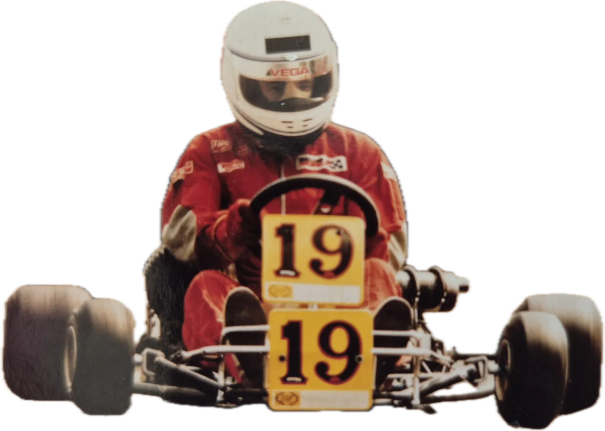
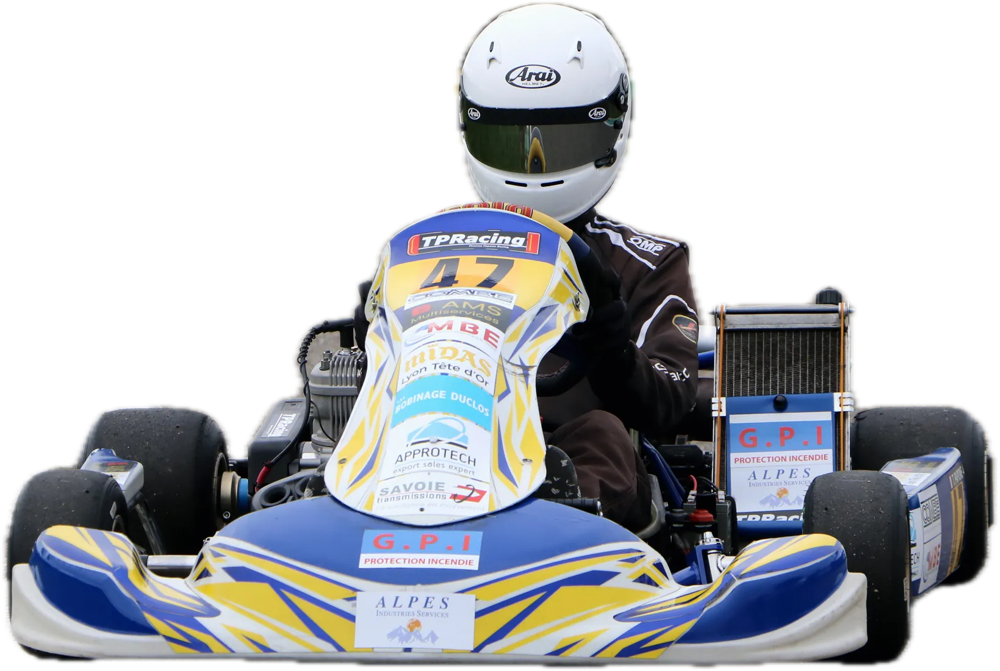
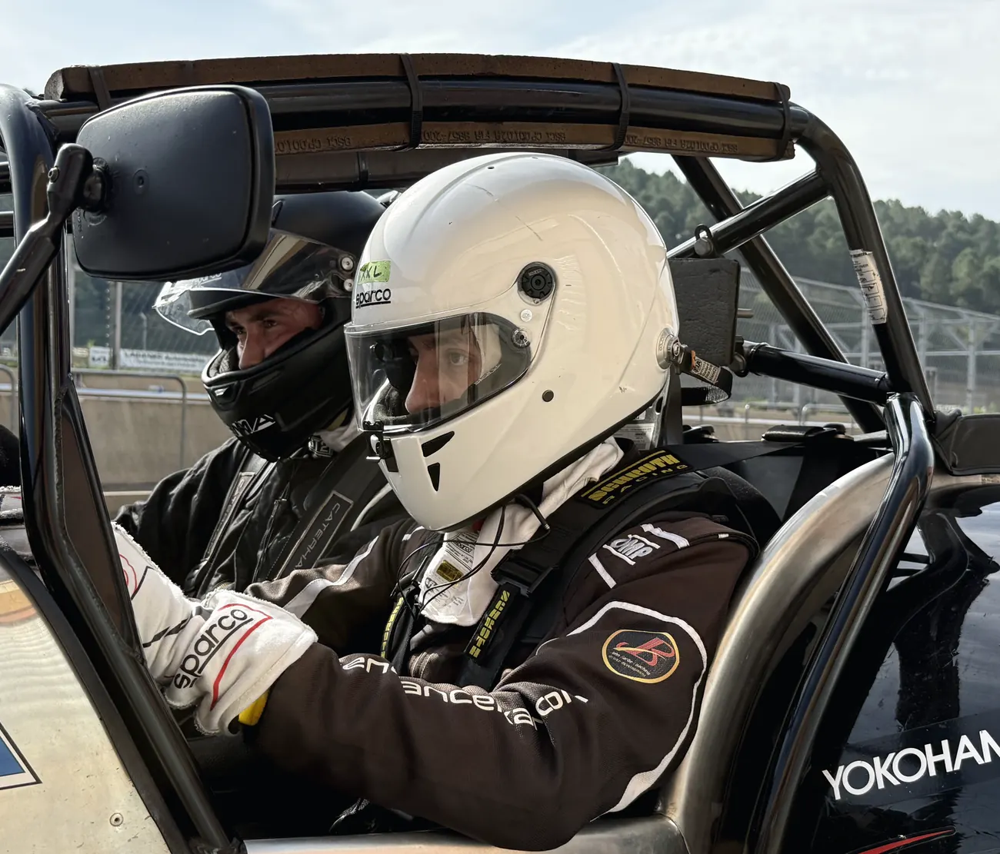

Cap sur laCaterham
Association de sport automobile. Après le karting et la monoplace, Thomas Papone prépare son entrée en Caterham Academy.
Le volantse transmet
Chez les Papone, la piste se transmet. Patrice a couru en karting puis en Formule Ford. En 2021, père et fils fondent TPRacing pour porter Thomas jusqu'à la course automobile. L'or de Senna / le marine de la rigueur / le rouge de la persévérance / le vert des racines Papone



La CaterhamAcademy
Une coupe réservée aux pilotes qui débutent en automobile, tous sur la même voiture. C'est la prochaine marche de Thomas, et ce que financent nos partenaires.
Ils parlent de nous
Ils roulent avec nous
Des artisans, des PME et des groupes de la région accompagnent le projet depuis ses débuts. Et vous, pourquoi pas ?
18 entreprises depuis 2022 / 4 présentes à chaque saison